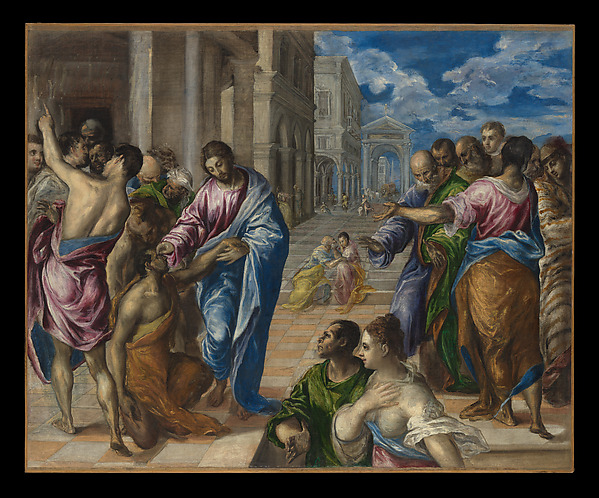

01 / Begin with God’s Word
Verse of the Day
Loading today's Scripture…

The Metropolitan Museum of Art · CC0 · Full credit ↗
Daily discipline
Hear the Word. Live the Word.
Read. Pray. Obey Christ.
02 / Grow in the Word
Quiz of the Day
Test your knowledge of God's Word.